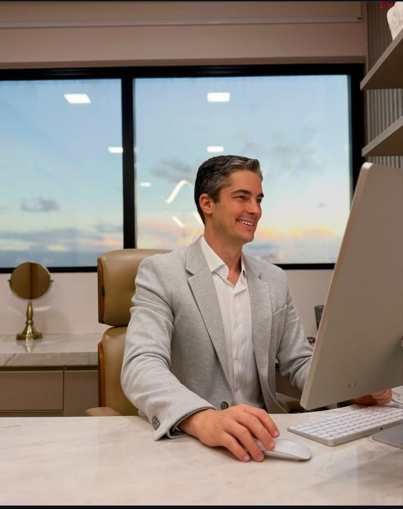
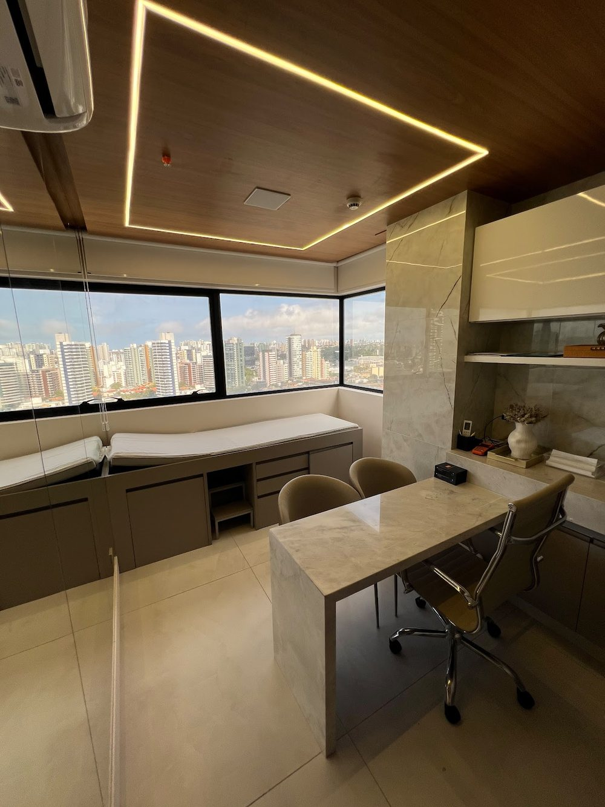
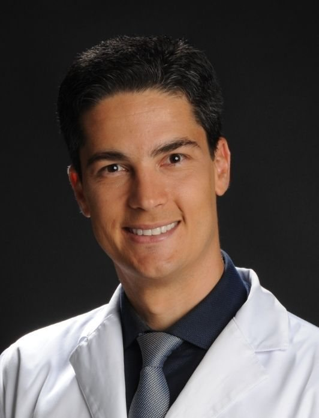
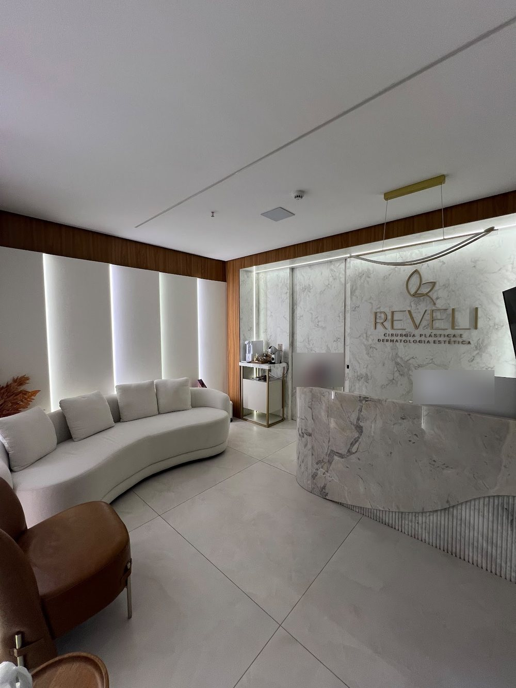
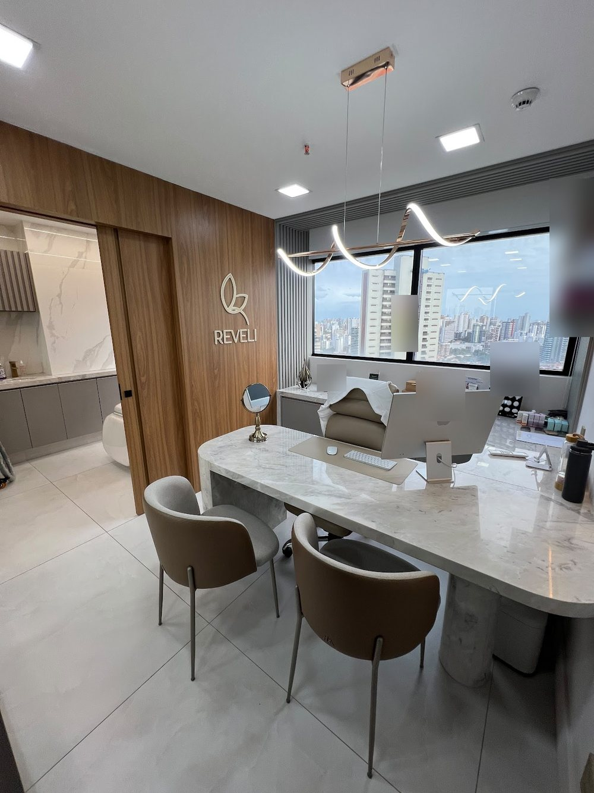
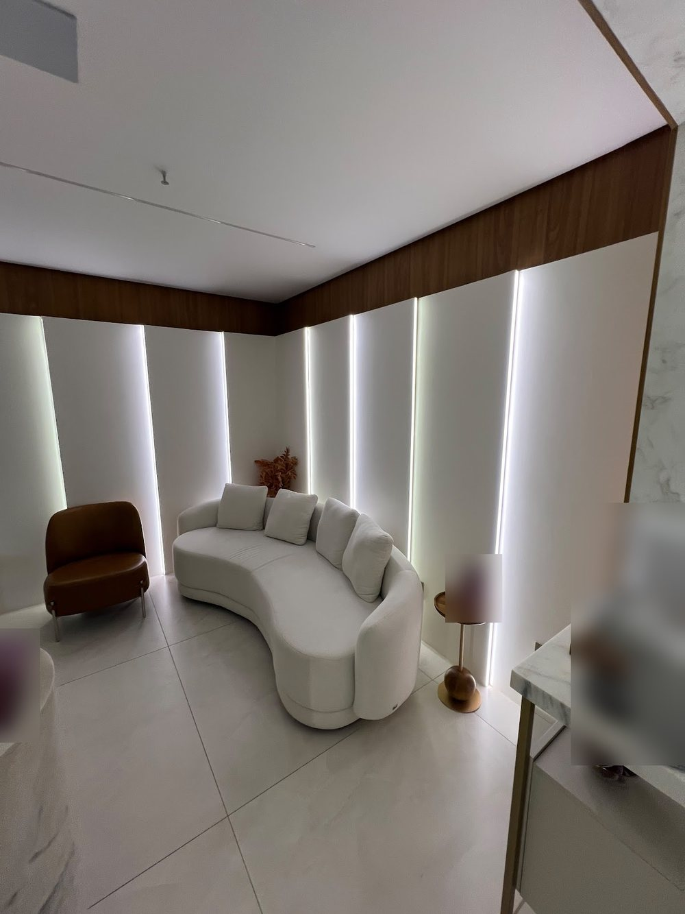
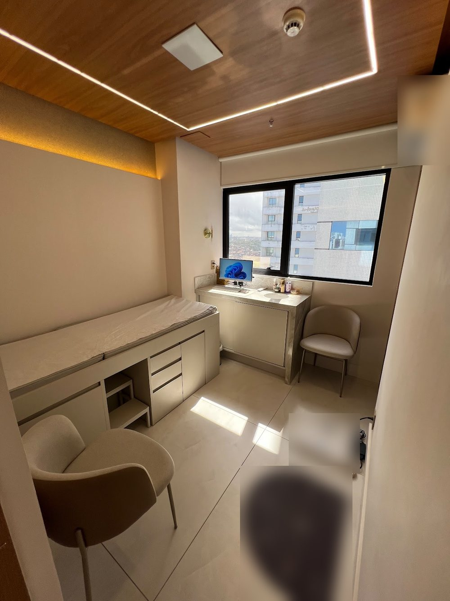

Membro Especialista da Sociedade Brasileira de Cirurgia Plástica
Dr. Rogério Vilas BoasCirurgião plástico em Salvador
Cirurgia plástica estética e reparadora, com consultório próprio na REVELI, no 15º andar do Edf. Ferreira Ferraz Empresarial, Caminho das Árvores. Residência em Cirurgia Plástica no Hospital Universitário Prof. Edgard Santos (UFBA).
CRM-BA 21072RQE 13980Sala 1505 · Caminho das Árvores

Por onde começar
O que trouxe você até aqui?
Escolha o assunto e leia com calma antes da consulta. A informação é geral; a indicação é sempre individual, definida em consulta.
Mamas, contorno corporal e face
O que a cirurgia plástica estética trata, e o que se avalia antes de indicar.
Cirurgia estética IIReparadoraReconstruir e devolver função
Reconstrução depois de tumores e traumas e a microcirurgia, declarada no perfil da SBCP.
Reparadora e microcirurgia IIIPrimeira consultaComo agendar e o que levar
Do WhatsApp à sala 1505: o passo a passo da primeira conversa.
Primeira consulta IVO cirurgiãoQuem é o Dr. Rogério
Escola Bahiana, Irmã Dulce, HUPES/UFBA e a Sociedade Brasileira de Cirurgia Plástica.
SobreDa janela da sala 1505
Salvador emoldurada pelo consultório.
A REVELI ocupa as salas 1505 e 1506 do Edf. Ferreira Ferraz Empresarial, na Av. Tancredo Neves, no Caminho das Árvores. É o consultório próprio do Dr. Rogério, que é sócio-administrador da clínica desde 2020.
Madeira clara, mármore e luz natural: é nesse espaço que a primeira conversa acontece, com tempo para ouvir, examinar e explicar.
- RecepçãoBalcão de mármore e sala de espera
- ConsultórioA mesa da consulta, diante da janela
- Sala de exameAvaliação com privacidade

Dois hospitais-escola
Da Irmã Dulce ao HUPES.
Antes da cirurgia plástica, a cirurgia geral: o Dr. Rogério fez as duas residências em hospitais-escola de Salvador, registradas no CNES como médico residente. Cada etapa tem a fonte pública ao lado.
- 2003–2009Escola Bahiana
Graduação em Medicina na Escola Bahiana de Medicina e Saúde Pública.
SBCP - 2012–2015Irmã Dulce
Residência em Cirurgia Geral no Hospital Santo Antônio, das Obras Sociais Irmã Dulce.
SBCP · CNES - 2013–2016HUPES · UFBA
Residência em Cirurgia Plástica no Hospital Universitário Prof. Edgard Santos.
SBCP · CNES - SBCPMembro Especialista
Categoria “Associado (Membro Especialista)” da Sociedade Brasileira de Cirurgia Plástica.
Perfil - HojeREVELI
Consultório próprio no Caminho das Árvores; cirurgião plástico do Hospital da Cidade no CNES.
CNES

Nas palavras do Dr. Rogério
Estética e reparadora, na mesma frase.
“Foco no Tratamento Estético e Reparador […], embasado em técnicas consagradas e reconhecidas no âmbito da Cirurgia Plástica.”
Perfil escrito por ele na Sociedade Brasileira de Cirurgia Plástica
A clínica
REVELI, por dentro.
Fotos publicadas pela própria clínica na ficha do Google. Nenhuma foto de paciente.




Avaliações
O que os pacientes contam.
Dr. Rogério Villas Boas é um excelente profissional, atencioso, competente, tira todas as nossas dúvidas.
Cada detalhe deixa o paciente mais tranquilo.
Nota média da ficha da REVELI no Google, com 4 avaliações.
Para conferir
O trabalho do Dr. Rogério em fontes públicas.
A sociedade de especialidade, o cadastro nacional de profissionais de saúde e os canais da clínica. Tudo com link.
Categoria, CRM, formação e microcirurgia entre as especializações declaradas.
Ver o perfil ↗ CNES · DataSUSHistórico de residência e vínculosMédico residente na Irmã Dulce e no HUPES; cirurgião plástico no Hospital da Cidade.
Abrir a consulta ↗ Instagram@clinicareveliO perfil da clínica, com publicações do consultório.
Abrir o perfil ↗Onde atendo
Sala 1505, Caminho das Árvores.
REVELI · Av. Tancredo Neves, 1033, salas 1505 e 1506 · Caminho das Árvores · Salvador – BA.
REVELI · Edf. Ferreira Ferraz EmpresarialAv. Tancredo Neves, 1033, salas 1505 e 1506 · Caminho das Árvores · Salvador – BA
Horário de atendimento
Horário da ficha da clínica no Google. Consulta com hora marcada: confirme pelo WhatsApp.
Dúvidas frequentes
Perguntas comuns
Onde fica o consultório?
Na REVELI, no Edf. Ferreira Ferraz Empresarial: Av. Tancredo Neves, 1033, salas 1505 e 1506, Caminho das Árvores, Salvador. Veja o mapa e como chegar.
Como agendar uma consulta?
Pelo WhatsApp (71) 98129-2833. Dia e horário são combinados na conversa.
Qual é o horário?
A ficha da REVELI no Google informa segunda a sexta, das 08h às 18h. A consulta é com hora marcada: confirme pelo WhatsApp antes de ir.
O Dr. Rogério é membro da Sociedade Brasileira de Cirurgia Plástica?
Sim. Na busca pública da SBCP, ele aparece na categoria “Associado (Membro Especialista)”. Registro CRM-BA 21072 · RQE 13980.
Onde ele fez a residência?
Cirurgia Geral no Hospital Santo Antônio, das Obras Sociais Irmã Dulce, e Cirurgia Plástica no Hospital Universitário Prof. Edgard Santos (HUPES/UFBA), de 2013 a 2016, segundo o CNES. Veja sobre o Dr. Rogério.
A primeira consulta já define a cirurgia?
A consulta serve para ouvir a queixa, examinar e explicar o que cada cirurgia pode e não pode fazer, com riscos, cicatrizes e recuperação. A indicação é individual, e a decisão é sua.
Aceita convênio? Quanto custa?
Confirme pelo WhatsApp as condições de atendimento.
Agende
A conversa começa na sala 1505.
Consulta com hora marcada na REVELI, Edf. Ferreira Ferraz Empresarial, Caminho das Árvores. Combine dia e horário pelo WhatsApp (71) 98129-2833.